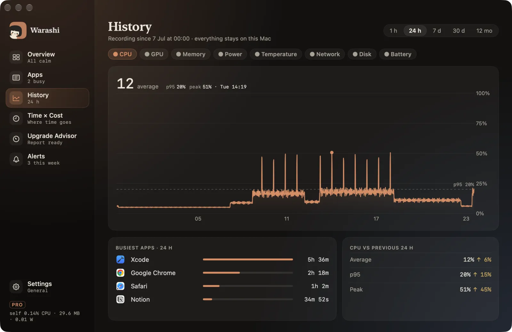

History is what makes Warashi a flight recorder: it keeps your Mac's numbers so you can look back at what happened.
- Open History
Choose History in the sidebar or press ⌘3.

- Pick a range
At the top right: 1 h, 24 h, 7 d, 30 d or 12 mo.
- Pick a metric
Choose CPU, GPU, Memory, Power, Temperature, Network, Disk or Battery. The big number is the average for the range, with p95 and the peak beside it.
- Scrub the chart
Hover the chart: the headline becomes the value at that moment, with its time.
- See who was behind it
Below the chart, Busiest apps for the range and how the range compares with the one before.
How much is kept
| Detail | Kept for |
|---|---|
| Every 5 seconds | 24 hours |
| Every minute | 30 days |
| Every hour | 12 months |
Good to know: Everything stays on your Mac, in a small database in your user Library (Application Support › Warashi).